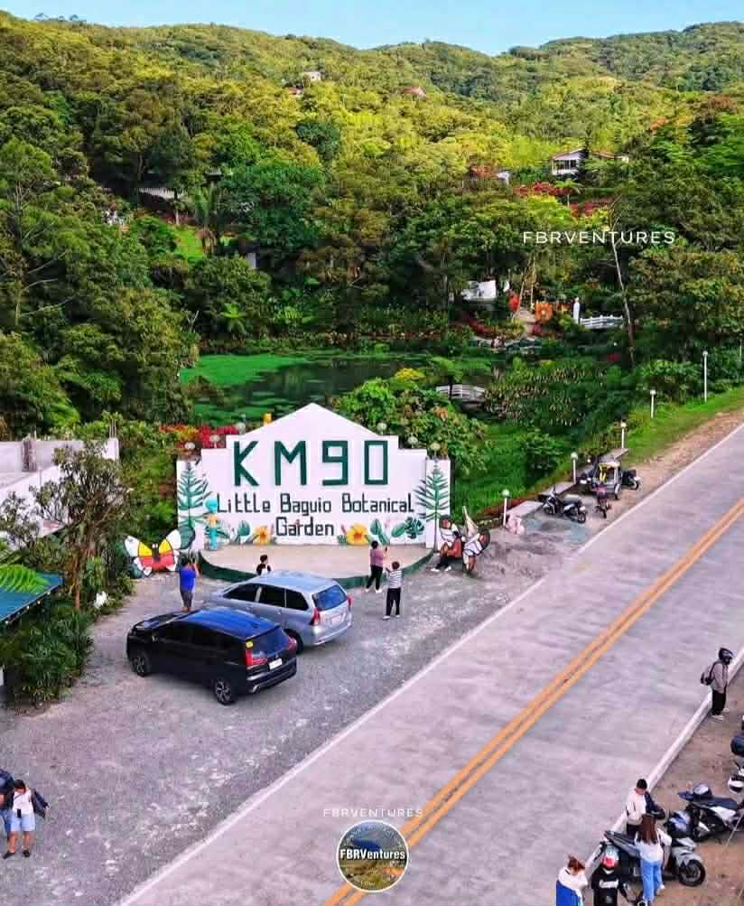
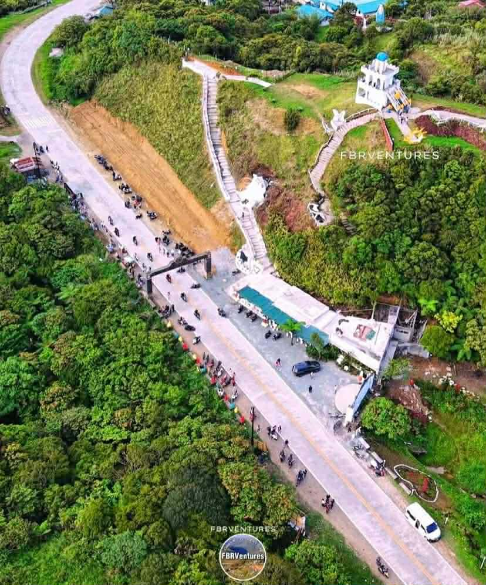
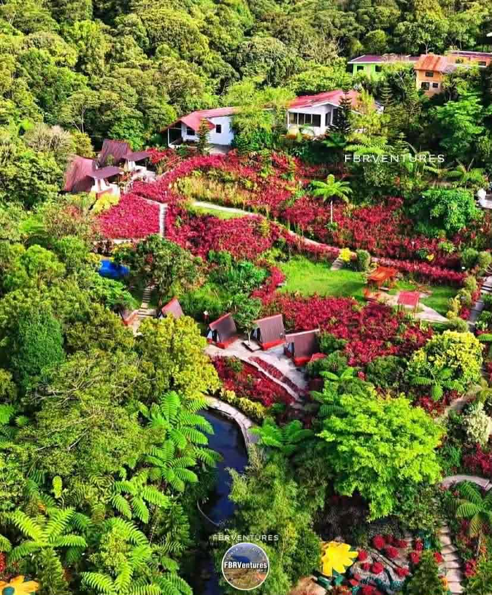
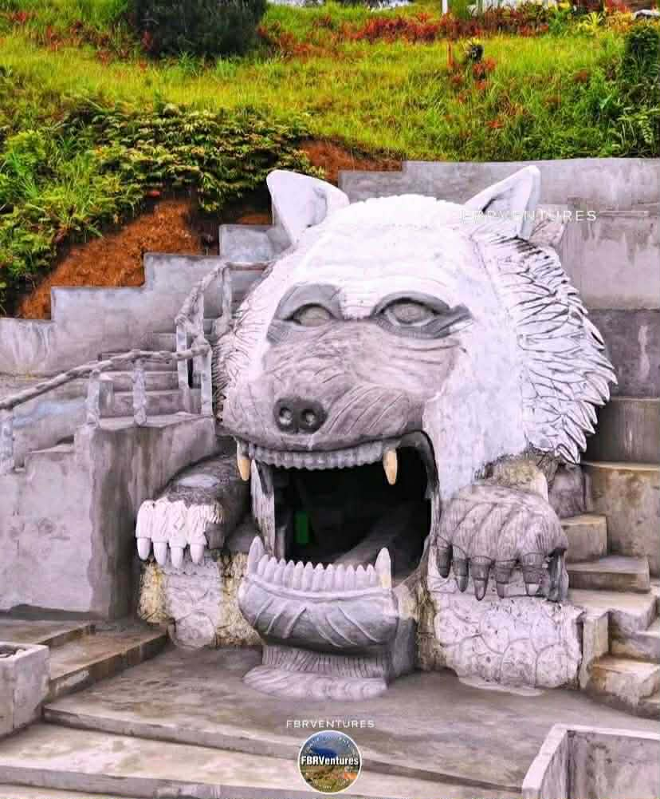

Overview
Km. 90 is a popular roadside eco-stop in the Sierra Madre foothills with picnic lawns, garden spaces, casual dining, and scenic mountain views.
A scenic mountain rest stop along Marikina–Infanta Highway, offering cool breezes, elevated views, picnic areas, and eco-style leisure for road trippers, bikers, and families.

Km. 90 is a popular roadside eco-stop in the Sierra Madre foothills with picnic lawns, garden spaces, casual dining, and scenic mountain views.

Located at Km. 90, Barangay Magsaysay, Infanta. Accessible via Marikina–Infanta (Marilaque) Highway. Private vehicles and motorcycles are preferred; no direct public transport.

Highland area with cool mountain air, occasional fog, rolling hills, grasses, trees, and garden spots offering a “mini-Baguio” feel along the highway.
